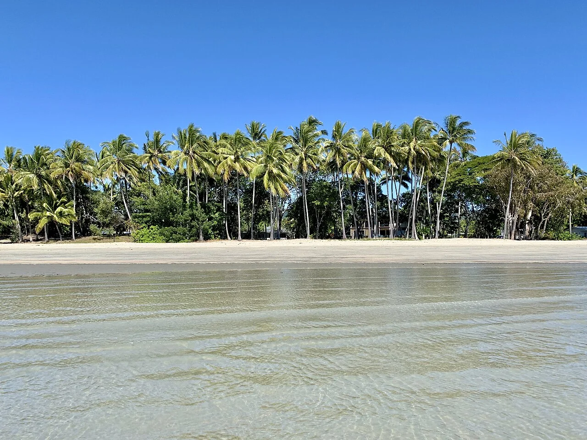

Four Mile Beach — Port Douglas
Port Douglas, Queensland, Australie · baignade

Longue plage de sable doré bordée de palmiers, à Port Douglas, dans le nord du Queensland. Une zone de baignade protégée par un filet anti-méduses est installée dans l’eau pendant la saison des méduses, et des sauveteurs patrouillent à certaines heures (Douglas Shire Council). Dans la région de Cairns, la mer est à 29,3 °C en moyenne en janvier (seatemperatu.re).
- Lieu
- Port Douglas, Queensland, Australie
- Niveau
- Variable selon les conditions
- Activités
- baignade
- Type d'eau
- Mer / océan
- Coordonnées
- -16.51, 145.47 (position approximative du secteur)
Dangers à connaître
- Saison des méduses (stingers) en général de novembre à mai : décembre et janvier en font partie. Le filet protège bien contre la méduse-boîte, mais pas à 100 %.
- La plage peut fermer quand des méduses sont présentes : en janvier 2020, une méduse Irukandji trouvée dans le filet a fait fermer la plage 24 heures.
- Les sauveteurs ne patrouillent qu’à certaines heures : renseigne-toi avant d’entrer dans l’eau.
Le conseil d'Ocean Buddy
Baigne-toi seulement dans le filet, entre les drapeaux rouge et jaune, et demande conseil aux sauveteurs. Pendant la saison des méduses, mets une combinaison intégrale (néoprène ou lycra) et entre dans l’eau doucement.
Ouvrir dans Ocean Buddy Télécharger sur l'App Store
Source : Fiche Ocean Buddy · décembre 2026 · d’après Douglas Shire Council, Wikipédia (Port Douglas), Newsport et seatemperatu.re · à vérifier localement.